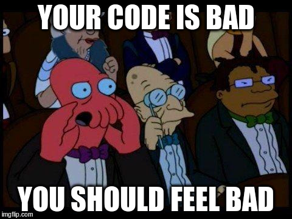

Bienvenidos a...
AKA
From STUPID to SOLID
STUPID
- Singleton
- Tight Coupling
- Untestability
- Premature Optimization
- Indescriptive Naming
- Duplication

Singleton
Si crees que necesitas un Singleton...
probablemente no lo necesites.

Por qué?
- Expone una variable global (global is evil!)
- Esconde dependencias
- Dificulta Unit Testing
Veámoslo en un ejemplo...
public static class MyDbConnection
{
private SQLServerCon connection;
private MyDbConnection instance = null;
private MyDbConnection()
{
this.connection = new SQLServerCon();
}
public static MyDbConnection GetDbInstance()
{
if(instance == null)
{
this.instance = new MyDbConnection();
}
return instance;
}
//Db methods
}
Por que esta mal exponer la conexión globalmente?
- Rompe la arquitectura del proyecto (EJ: 3-tier)
- Si se modifica en algun punto, su estado cambia para el resto de la App
Que dependencias esconde?
private SQLServerCon connection;
connection esta "atada" al tipo de la Db- Esto rompe con los principios SRP y O/C...que veremos mas adelante
Como impacta en Unit Testing?
Supongamos la siguiente secuencia:
- Corremos un test que use la Db
- Da VERDE
- Algun proceso modifica nuestro objeto MyDbConnection
- Corremos el mismo test
- Puede dar ROJO
Como solucionarlo?
Nos da el pie para introducir el siguiente principio...
Tight Coupling
Puede ser una consecuencia del uso del Singleton, pero que es en si?
Es el grado de dependencia entre los módulos de nuestra aplicacion.
En otras palabras...
Si se hace un cambio en cierto módulo de la aplicación y esto requiere que a su vez otro modulo sea modificado, entonces decimos que hay acoplamiento entre ellos.
Como podríamos solucionar el problema del punto anterior?
public class MyDbConnection
{
private IDbConnection connection;
public MyDbConnection(IDbConnection myConnection)
{
this.connection = myConnection;
}
}
public class DbFactory
{
public IDbConnection GetDbInstance(DbType type)
{
return this.BuildDb(type);
}
private BuildDb(DbType type)
{
// build DB
}
}
Untestability
Testear no debería ser complicado.
Aún así hay gente que no cubre apropiadamente su código con tests.
¿Por qué?
Tight Coupling.
Cuando no escribes tests porque “no tenes tiempo” la causa real probablemente es que tu código sea malo, si tu código es de calidad entonces puedes testearlo de forma rápida.

Premature optimization
“Uno tiende a pensar en factores externos y termina perdiendo tiempo en problemas que quizás nunca sucedan..”
— Luciano (Lucho) Longo
Optimize later!
No sobre diseñar y no optimizar de más.
Don't code for performance. Code for clarity, correctness and maintainability.
Saber de complejidad algorítmica nos ayuda a distinguir lo que sí vale la pena optimizar
(la optimización que no es prematura)
Indescriptive Naming
¿Bastante obvio no?
Todavia necesita ser aclarado
Indescriptive Naming
Nombra tus clases, métodos, atributos y variables adecuadamente.
Indescriptive Naming
¡No abrevies!
Escribimos código para personas no para las computadoras, ellas no entienden lo que escribes, solo entienden de 0 y 1.
Los lenguajes de programación son para humanos
Duplication
Duplicar es malo malo malo malo
¿Por qué sucede?
Los programadores somos perezosos, entonces sería natural escribir lo menos posible, de todas formas el código duplicado prevalece.
¿Entonces?
Tight coupling, si tu código está altamente acoplado no puedes re utilizarlo
DRY
Don't Repeat Yourself, keep it simple Graion
¿Estas malas prácticas les son familiares?
No se sientan mal

Nos ha pasado, y nos sigue pasando, a todos
SOLID al rescate
Son una serie de principios para hacer tu codigo más limpio y mantenible.
Esto significa, codigo más desacoplado, facil de modificar y extender.
Pero señor McClure, ¿Que significa SOLID?
The End
Principios SOLID
- Single Responsibility
- Open/Closed
- Liskov Substitution
- Interface Segregation
-
Dependency Inversion
Dependency Injection
Single Responsibility Principle
“...states that each software module should have one and only one reason to change.”
— Robert (Uncle Bob) C. Martin
¿Razones para cambiar?
- Refactoring?
- Bug-fixing?
Estas son responsabilidades del desarollador, no del programa.
Responsabilidades!
¿A quién debe responder el [programa|aplicación|clase|librería|etc]?
Personas que pueden causar que cambiemos el código.
class Article {
// ... constructor, getters, setters, etc...
public function render() {
$format = '%s
';
$format .= '';
$format .= '%s';
return sprintf(
$format,
$this->getTitle(),
$this->getPublishDate(),
$this->getAuthor()->getName(),
$this->getBody()
);
}
public function save() {
$this->db->insert('articles', [
'title' => $this->getTitle(),
'author' => $this->getAuthor()->getId(),
// etc...
]);
}
}¿Quienes podrían causar que este codigo cambie?
- Front-end dudes?
- DBA dudes?
SI
Siempre van a haber terceros que causen cambios.
Pero!
Que sea solo una sola persona por clase.
¿Mejoras?
render() y save() son responsabilidades extras que Article
no necesita conocer.
-
render(): puede irse a una vista, o a otra clase si fuera necesario -
save(): lo movemos a un repositorio
Open/Closed Principle
“A satisfactory modular decomposition technique must satisfy one more requirement: It should yield modules that are both open and closed.”
— Bertrand Meyer, 1988
“You should be able to extend the behavior of a system without having to modify that system.”
— Robert (Uncle Bob) C. Martin
¿Mejor?
O sea...
Abierta (Open) para extensión
Cerrada (Closed) para modificación
Mejoremos el ejemplo anterior
Separamos render() a su propia clase...
class Output {
public function __construct(array $data) {
$this->data = $data
}
public function render($format = 'html') {
$out = '';
switch ($format) {
case 'html':
$out = \View::make('article', $this->getData());
break;
case 'json':
$out = json_encode($this->getData());
break;
default:
throw new Exception("Unexpected format [$format]");
}
return $out;
}
}
$out = new Output($article->toArray());
$out->render('json');SRP
Bueno, más o menos...
Article ya no se renderiza a si mismo
Pero...
OCP
Output sabe demasiado
Output sabe la implementación de cada formato.
Esto también viola SRP.
¿Por qué?
HTML es front-end, pero JSON y XML no necesariamente.
Puede ser que otras personas no front-enders tengan poder de decisión sobre esto.
¿Si quisieramos corregir un formato o agregar otro?
Tendríamos que modificar Output
Potencialmente introduciendo errores indirectamente relacionados al cambio que estamos haciendo.
And that is bad
mkey?
Code smell: Type checking
switchinstanceofis_a- etc...
Más mejoras!
class Output {
// ...
public function render(Renderer $renderer) {
return $renderer->render($this->getData());
}
}interface Renderer {
/**
* @return string
*/
public function render(array $data);
}
class HtmlRenderer implements Renderer { /* .. */ }
class JsonRenderer implements Renderer { /* .. */ }
class XmlRenderer implements Renderer {
public function render(array $data) {
$out = '<data>';
foreach ($data as $key => $value) {
$out .= "<$key>$value</$key>";
}
$out .= '<data>';
return $out;
}
}$out = new Output((new ArticleTransformer)->transform($article));
$out->render(new XmlRenderer);Extra credit
class ArticleTransformer {
public function transform(Article $article) {
return [
'id' => (int) $article->getId(),
'title' => $article->getTitle(),
'content' => $article->getContent(),
'published_at' => $article->getPublishDate()
->toDateTimeString(),
// etc...
];
}
}Liskov Substitution Principle
“Subtype Requirement: Let
f(x) be a property provable about objects x of type T. Then f(y) should be true for objects y of type S where S is a subtype of T.”
— Barbara Liskov, Data abstraction and hierarchy, 1987
Simplificando un poco...
Siendo X un subtipo T
X tiene que poder ser usada donde se requiera T
Sin alterar el correcto funcionamiento del programa
¿Mejor?
¿Cómo logramos esto?
- Interfaces / Clases abstractas
- Precondiciónes igual o más restrictivas
- Postcondiciónes igual o menos restrictivas
En el ejemplo anterior teníamos
HtmlRendererJsonRendererXmlRenderer
Todas subtipos de Renderer
Sus pre y post condiciónes igual de restrictivas
LSP
Creo que ya lo habrán notado...
Todos los principios de SOLID están muy interrelacionados.
Si se rompe uno, se rompen varios o todos.
Veamos un mal ejemplo
class OtherXmlRenderer extends XmlRenderer {
public function render($data) { // precondición menos restrictiva
$out = new stdClass;
// magic ¯\_(ツ)_/¯
return $out; // postconición más restrictiva / distinta
}
}Aclaración: esto no es posible en php
Interface Segregation Principle
The interface-segregation principle (ISP) states that no client should be forced to depend on methods it does not use.
Suena obvio...
pero a veces no nos damos cuenta que lo estamos rompiendo
Supongamos la siguiente interfaz
public interface IVehicle
{
void StartEngine();
void Accelerate();
void Brake();
void LightsOn();
void SignalLeft();
void SignalRight();
void ChangeGear();
void StopRadio();
void EjectCD();
}
Que pasa si creamos un vehículo que no tiene stereo?
- Estariamos forzando a implementar metodos innecesarios...
StopRadio()yEjectCD()- Ademas, rompemos el principio SRP
Podríamos volver a plantear las interfaces de esta manera:
public interface ISpeedControl
{
void StartEngine();
void Accelerate();
void Brake();
void ChangeGear();
}
public interface IRadioControl
{
void StopRadio();
void EjectCD();
}
Separando las responsabilidades (SRP) evitamos el uso de "Fat Interfaces"
Dependency Inversion Principle
Dependency Injection
“A. High-level modules should not depend on low-level modules. Both should depend on abstractions.
B. Abstractions should not depend upon details. Details should depend upon abstractions.”
— Robert (Uncle Bob) C. Martin, Agile Software Development, Principles, Patterns, and Practices
wat
¿High-level? ¿Low-level?
Código de bajo nivel (low-level)
Código que se concentra en detalles.
Por ejemplo: PDO, MongoDB, Filesystem, etc.
Código de alto nivel (high-level)
Lo contrario, en general usan código low-level.
Por ejemplo: Repository, puede usar PDO, Filesystem, etc.
En ambos casos, dependencias abstractas
ArticleManager IArticleRepository
IArticleRepository no es una implementación, es una interfaz.
¿Beneficios?
Podemos cambiar la implementación de IArticleRepository cuando sea necesario
Sin tener que alterar el codigo del ArticleManager
Decoupling FTW
La idea de estos principios es lograr que nuestro codigo quede lo más desacoplado posible.
Poniéndolo en código:
ArticleManager seria nuestro "High Level"
public class ArticleManager{
private IArticleRepository repository;
public ArticleManager(){
//Ninject method to resolve dependency
repository = this.Kernel.Get<IDmaRepository>();
}
public void SaveArticle(Article myArticle){
this.repository.Save(myArticle);
}
public Article GetArticle(int articleId){
this.repository.GetArticle(articleId);
}
}
IArticleRepository seria el contrato para "Low Level"
Pero no es una implementación, sino una abstracción
public interface IArticleRepository{
void Save(Article myArticle);
void GetArticle(int articleId);
}
ArticleDbRepo y ArticleMockedRepo serian las implementaciones "Low Level"
public class ArticleDbRepo : IArticleRepository{
public void Save(Article myArticle){
//save article to DB
}
public void GetArticle(int articleId){
//get article from DB
}
}
public class ArticleMockedRepo : IArticleRepository{
public void Save(Article myArticle){
//save article to mocked repo (could be an array for instance)
}
public void GetArticle(int articleId){
//get article from mocked repo (could be an array for instance)
}
}
De esta forma...
- Las implementaciones son totalmente independientes
- "High Level" solo interactua con la abstracción
IArticleRepository
Pero como sabemos que implementación usar?
Usando Ninject (constructor de ArticleManager)
public class Bindings : NinjectModule{
public override void Load(){
if(config == "test"){
Bind<IArticle().To<ArticleDbRepo>();
//more bindings
}
else{
Bind<IArticle().To<ArticleMockedRepo>();
//more bindings
}
}
}
Pero... ¿y la "inversión" donde está?
La arquitectura de un proyecto se divide en distintas capas
- Capa de negocio (high-level)
- Capa de datos (low-level)
- Entre otras
La comunicación es unidireccional
high-level low-level.
Entonces
IArticleRepository es parte de la capa de negocio, no de datos
Sus implementaciónes, como ArticleDbRepo, sí forman parte de la capa de datos
¿Por qué?
ArticleManager define el contrato que la capa de datos debe implementar para comunicarse con la capa de negocio.